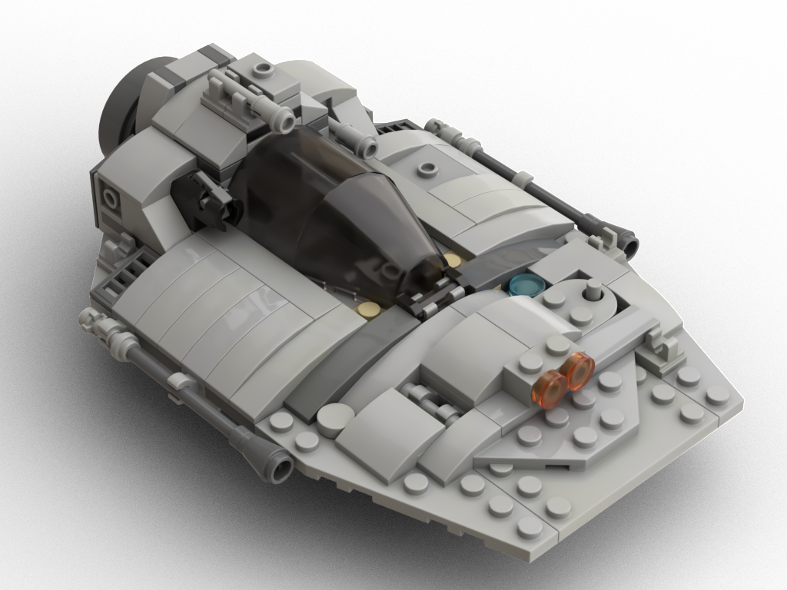
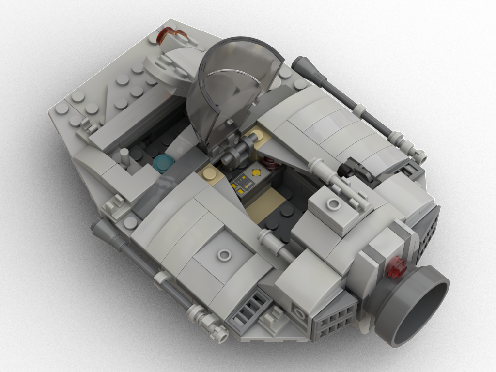
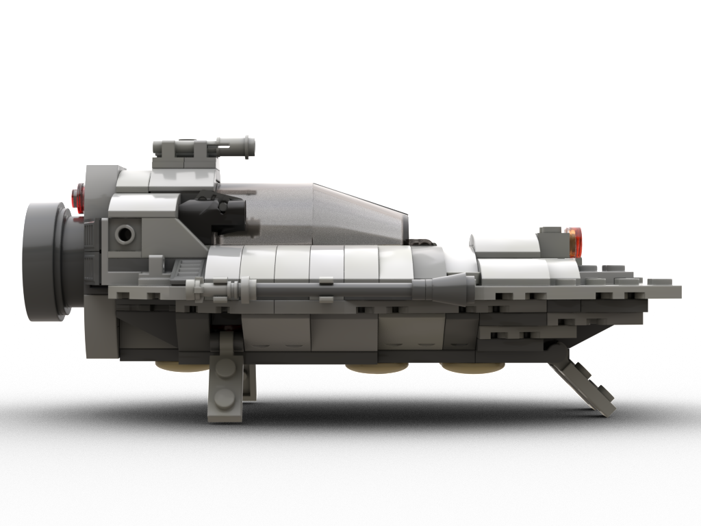
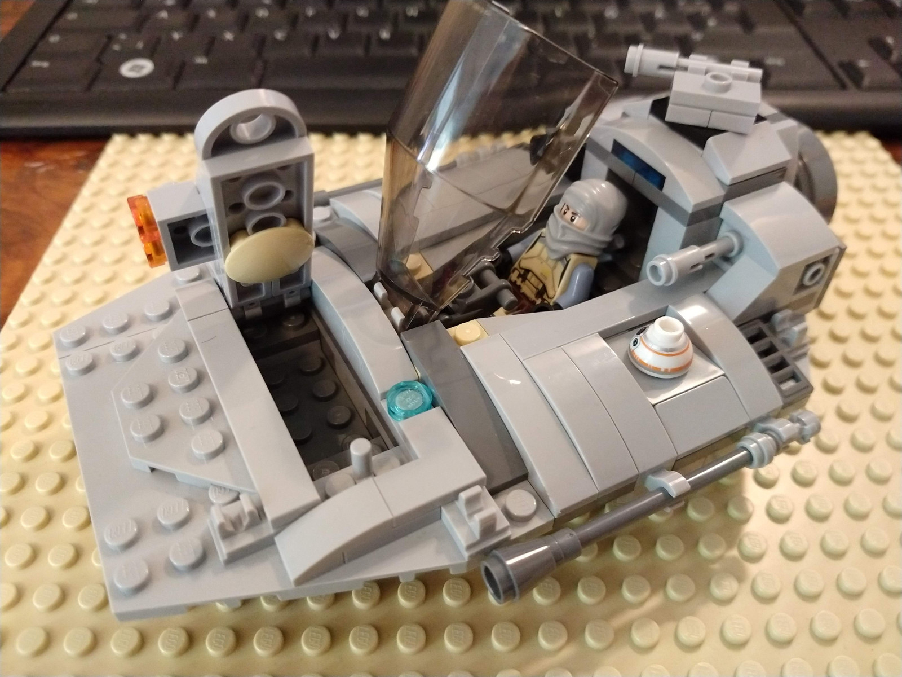
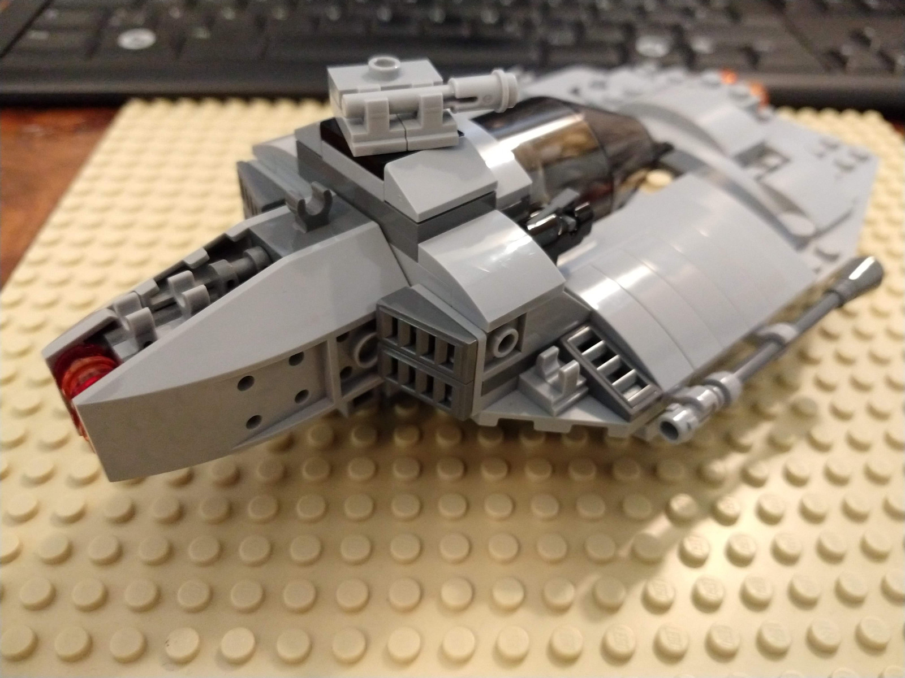
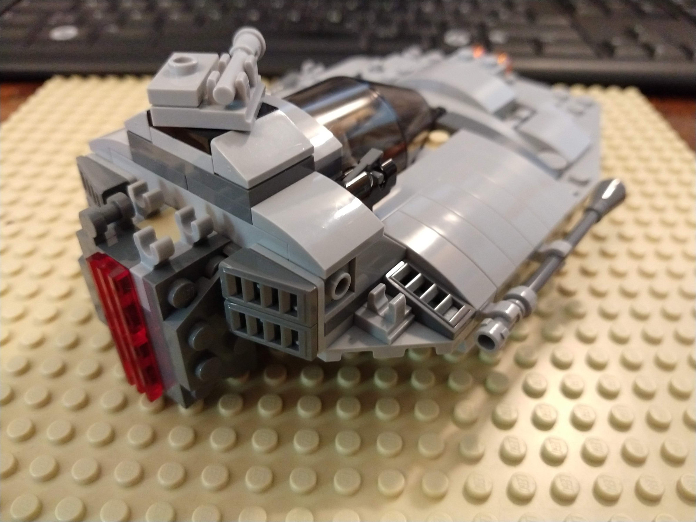
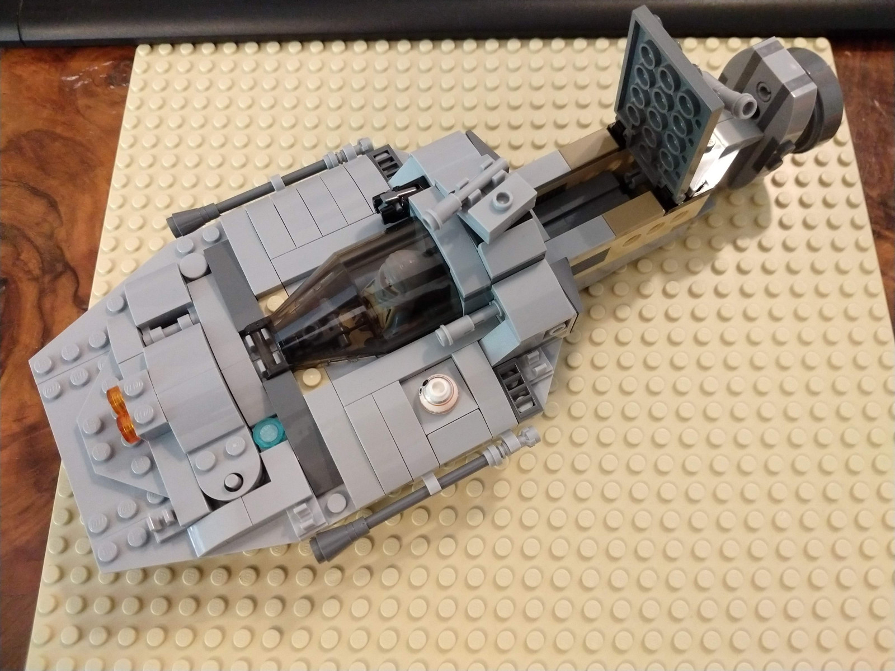

The Wedge (formerly known as the "Arrowhead") is heavy armed and armored assault fighter with plenty of pilot comfort for extended space and planetary missions.
Instructions (includes part list)
  
The design is heavily inspired by Star Wars' A-Wing. I did not want to buy the overpriced Lego set and built my version from memory (sans the A-Wing engines, I never liked those). The rear and engine part of the design is a bit boring, at least it is exchangeable. :) The slight asymmetries around the cargo lid and cockpit disc are there to spice things up a bit.
I started with the cockpit and wanted to have a plenty of pilot space plus retractable pedestals. This resulted in lots of iterations on the base hull, to make it sturdy. In the initial version both blasters behind the cockpit were like on the left side of the current version.
While making the instructions, I misassembled the turret piece (it is turned around), which resulted in an opportunity to save one 2x4 plate below the turret. In the photos below you can still see my original design before I broke it down to make the instructions. Overall this makes the turret slightly less tall, which improves aesthetics of the ship, but makes the cockpit harder to open when the turret is not aligned properly. Saving the 2x4 plate in the original design (180° flipped turret piece) would result in the turret not being able to turn when the engine is attached.

With GI Universal Pod engine attached: 
With the Needle engine: 
With the Needle cargo pod: 